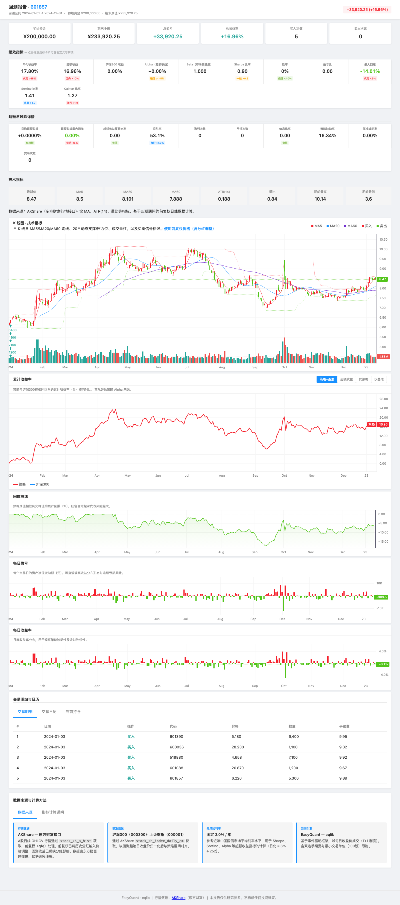

EasyQuant 用户手册¶
EasyQuant 是一个面向中国 A 股市场的量化策略与回测工具。核心库为
eqlibPython 包，通过from eqlib import *导入使用。
目录¶
- 新手先完成这 4 步
- 简介与适用范围
- 安装
- 快速开始：5 分钟写一个策略
- 策略生命周期
- 资金管理：设置初始资金与仓位控制
- 交易 API：买入与卖出
- 数据拉取
- 计算工具库
- 运行回测
- 9.1 run_strategy
- 9.2 run_backtest
- 9.3 组合回测模式
- 9.4 基准对比说明
- 回测报告与图表解读
- 10.1 图表（PNG）
- 10.2 交互式 HTML 报告
- 10.3 Markdown 报告
- 10.4 JSON 报告
- 风险与归因分析
- 模拟盘交易
- 使用 Claude Code AI Agent 自动化策略优化
- 常见问题
0. 新手先完成这 4 步¶
如果你是第一次接触 EasyQuant，请先完成以下最小闭环，再阅读后续章节：
- 安装：
- 验证导入：
- 跑一次完整回测：
- 打开
reports/下最新.html，确认图表和指标正常显示。
可选测试：
1. 简介与适用范围¶
eqlib 是一个面向 中国 A 股市场 的量化策略回测框架。它的数据源来自 akshare，采用事件驱动的策略 API 设计，支持完整的回测与模拟盘工作流。
适用场景： - A 股日线 / 分钟线回测 - 策略开发验证 - 模拟盘交易 - 选股 / 行业轮动 / 资金流分析 - 投资组合优化
不支持： - 港股、美股、期货、期权、加密货币等非 A 股品种 - 高频 T+0 策略（A 股为 T+1 交易制度）
2. 安装¶
环境要求：Python 3.10 及以上（见仓库 pyproject.toml 中 requires-python）。若使用 3.9 及以下，pip install . 会直接被拒绝。
# 推荐：在克隆的仓库根目录安装 eqlib（含全部依赖）
cd EasyQuant
pip install .
# 开发时可选用：pip install -e .
# 若仅想手动装依赖、再从源码路径导入（不推荐），可：
# pip install akshare pandas numpy matplotlib scipy
# pip install pyarrow # 可选，更好的磁盘缓存性能
确认安装成功：
3. 快速开始：5 分钟写一个策略¶
一个完整的策略由三个部分组成：initialize（初始化）、handle_data（每日逻辑）、以及调度函数（run_daily 等）。
from eqlib import *
# ========== 初始化函数 ==========
def initialize(context):
# 设置要操作的股票
g.security = '601390' # 工商银行
set_benchmark('000300.XSHG') # 沪深300 作为基准
set_option('use_real_price', True)
# 设置初始资金（在 run_backtest 中也指定，这里仅作策略内参考）
# context.portfolio.starting_cash 可读取
# 每天开盘时运行
run_daily(market_open, time='every_bar')
# ========== 每日交易逻辑 ==========
def market_open(context):
# 获取过去 20 天的收盘价
hist = attribute_history(g.security, 20, '1d', ['close'])
ma20 = hist['close'].mean()
# 获取当前价格（最近一根 bar 的收盘价）
current_price = hist['close'].iloc[-1]
# 金叉买入，死叉卖出（简化示例）
if current_price > ma20 * 1.02:
# 用可用现金全仓买入
order_value(g.security, context.portfolio.available_cash)
log.info("买入 %s，价格 %.3f" % (g.security, current_price))
elif current_price < ma20 * 0.98 and context.portfolio.positions.get(g.security):
# 清仓卖出
order_target(g.security, 0)
log.info("卖出 %s，价格 %.3f" % (g.security, current_price))
# ========== 运行回测 ==========
result = run_strategy(
initialize,
start_date='2024-01-01',
end_date='2024-12-31',
starting_cash=100000, # 初始资金 10 万元
benchmark='000300.XSHG', # 对比基准
securities=['601390'], # 预加载数据
report_dir='reports',
)
运行后会输出（时间戳每次不同）：
- reports/backtest_YYYYMMDD_HHMMSS.png — 价格与交易标记图
- reports/backtest_YYYYMMDD_HHMMSS.html — 交互式报告（浏览器直接打开）
- reports/backtest_YYYYMMDD_HHMMSS.md — 回测摘要报告
- reports/backtest_YYYYMMDD_HHMMSS.json — 结构化数据
HTML 各区块与指标含义见 报告与指标详解。
4. 策略生命周期¶
initialize(context) ← 回测开始时调用一次
|
v
before_trading_start(ctx, data) ← 每个交易日开盘前调用（可选注册）
|
v
run_daily / run_weekly / run_monthly 定时函数
|
v
handle_data(context, data) ← 每个交易日调用一次
|
v
after_trading_end(ctx, data) ← 每个交易日收盘后调用（可选注册）
4.1 initialize(context)¶
策略入口，每个策略必须定义。
def initialize(context):
g.security = '601390' # 存入全局对象
set_benchmark('000300.XSHG') # 设置对比基准
set_order_cost(OrderCost( # 设置手续费（可选）
open_tax=0,
close_tax=0.001, # 卖出印花税 0.1%
open_commission=0.0003, # 买入佣金 0.03%
close_commission=0.0003, # 卖出佣金 0.03%
min_commission=5, # 最低佣金 5 元
))
run_daily(market_open, time='every_bar')
4.2 handle_data(context, data)¶
每日交易逻辑。也可以用 run_daily 代替。
def handle_data(context, data):
# data[security] 返回当前日的 bar 对象（open/high/low/close/volume/money）
bar = data.get(g.security)
if bar:
log.info("%s 今日收盘: %.2f" % (g.security, bar.close))
4.3 盘前/盘后回调¶
from eqlib import before_trading_start, after_trading_end
def before_start(context, data):
log.info("盘前检查...")
def after_end(context, data):
log.info("盘后统计: 持仓 %d 只" % len(context.portfolio.positions))
before_trading_start(before_start)
after_trading_end(after_end)
4.4 g 全局对象¶
g 是策略级别的持久化存储，跨交易日有效。
def initialize(context):
g.security = '601390'
g.hold_days = 0
g.ma_period = 20
def market_open(context):
g.hold_days += 1
log.info("持有天数: %d" % g.hold_days)
5. 资金管理：设置初始资金与仓位控制¶
5.1 设置初始资金¶
在 run_strategy 或 run_backtest 中指定：
result = run_strategy(
initialize,
start_date='2024-01-01',
end_date='2024-12-31',
starting_cash=500000, # 50 万元初始资金
)
5.2 读取账户状态¶
def market_open(context):
cash = context.portfolio.available_cash # 可用现金
total = context.portfolio.total_value # 总资产（现金 + 持仓市值）
positions = context.portfolio.positions # 持仓字典
returns = context.portfolio.returns # 总收益率
log.info("现金: %.2f, 总资产: %.2f, 收益率: %.2f%%"
% (cash, total, returns * 100))
5.3 仓位控制方式¶
| 方式 | 函数 | 说明 |
|---|---|---|
| 全仓买入 | order_value(security, context.portfolio.available_cash) |
用全部可用现金买入 |
| 按比例买入 | order_value(security, context.portfolio.available_cash * 0.5) |
用 50% 现金买入 |
| 按固定金额 | order_value(security, 50000) |
买入 5 万元 |
| 按固定股数 | order(security, 1000) |
买入 1000 股（自动取整到 100 的整数倍） |
| 调到目标股数 | order_target(security, 5000) |
调整持仓到 5000 股 |
| 调到目标市值 | order_target_value(security, 100000) |
调整持仓市值到 10 万 |
| 清仓 | order_target(security, 0) |
全部卖出 |
A 股最小交易单位为 100 股（1 手），所有买入会自动向下取整到 100 的整数倍。
5.4 多股等权配置示例¶
def market_open(context):
stocks = ['601390', '600519', '000858']
weight = context.portfolio.available_cash / len(stocks)
for sec in stocks:
order_value(sec, weight) # 每只股票平分可用资金
6. 交易 API：买入与卖出¶
重要：
order/order_value/order_target/order_target_value在回测中是先入队，统一按下一交易日开盘价成交（不是当日立即成交）。
6.1 order(security, amount)¶
按股数买卖，正数买入，负数卖出。
6.2 order_value(security, value)¶
按金额买卖，正数买入，负数卖出。
6.3 order_target(security, amount)¶
调整持仓到目标股数。
6.4 order_target_value(security, value)¶
调整持仓到目标市值。
7. 数据拉取¶
7.1 历史日线数据¶
# 方式一：在 handle_data 中使用 history()
def market_open(context):
close = history(20, '1d', 'close', security='601390')
ma20 = close.mean()
# 方式二：attribute_history（更灵活）
hist = attribute_history('601390', 30, '1d',
fields=['open', 'close', 'volume', 'high', 'low'])
# 方式三：get_price（支持指定日期范围）
df = get_price('601390',
start_date='2024-01-01',
end_date='2024-06-30',
fields=['open', 'high', 'low', 'close', 'volume'])
返回的 DataFrame 包含：open, high, low, close, volume, money, pct_change, turnover 等列，索引为日期。
7.2 实时行情快照¶
# 获取全部 A 股当前快照
data = get_current_data()
print(data['601390']) # {'code': '601390', 'name': '工商银行', 'price': 5.2, ...}
# 获取单只股票信息
info = get_security_info('601390')
print(info.name, info.industry)
# 获取估值数据
val = get_valuation('601390')
print(val['pe'], val['pb'], val['total_value'])
7.3 选股与扫描¶
# 扫描符合条件的股票
candidates = scan_market(
min_price=10,
min_pct_change=3,
max_pct_change=5,
max_pe=50,
)
# 按财务指标筛选
screened = get_financial_screen(
min_pe=5, max_pe=30,
min_pb=0.5, max_pb=3,
min_roe=0.1,
)
7.4 指数与行业成分股¶
# 指数成分股
constituents = get_index_stocks('000300.XSHG') # 沪深300 成分股
# 行业列表及成分股
industries = get_industry_list() # 所有行业板块
stocks = get_industry_stocks('白酒') # 白酒行业成分股
# 概念板块
concepts = get_concept_list() # 所有概念板块
concept_stocks = get_concept_stocks('人工智能') # 人工智能概念股
# 单只股票所属行业
info = get_industry('601390')
print(info['industry'])
7.5 分钟线数据¶
# 获取 5 分钟线
df_5m = fetch_minute_data('601390', period='5m')
# 使用 get_price_minute
df_5m = get_price_minute('601390', count=100, period='5m',
fields=['open', 'close', 'volume'])
支持的周期：1m, 5m, 15m, 30m, 60m
7.6 Tick 数据¶
7.7 资金流向与龙虎榜¶
# 个股资金流向
flow = get_money_flow('601390', count=30)
# 龙虎榜
billboard = get_billboard_list(date='20241201')
# 指数成分股权重
weights = get_index_weights('000300.XSHG')
7.8 ST 标记与额外字段¶
7.9 交易日历¶
days = get_trade_days(
start_date='2024-01-01',
end_date='2024-12-31',
)
# 最近 10 个交易日
recent_days = get_trade_days(count=10)
7.10 财务摘要¶
7.11 下载与加载本地 CSV¶
# 下载数据到本地
path = download_stock_data('601390', '2020-01-01', '2024-12-31',
output_dir='data')
# 从本地 CSV 加载
df = load_csv('data/601390_daily.csv')
建议的快速验证流程（本地优先）：
from eqlib import (
set_local_data_dir, save_stock_local, has_local_data,
run_backtest
)
set_local_data_dir('/home/user/eqlib_data') # 建议使用绝对路径，便于多项目复用
# 先预下载策略股票 + 基准
for sec in ['601390', '600519', '000300.XSHG']:
path = save_stock_local(sec, '2020-01-01', '2024-12-31')
print(sec, '->', path, '; ready =', has_local_data(sec))
# 回测时开启 use_local，提高稳定性与速度
result = run_backtest(
initialize,
start_date='2024-01-01',
end_date='2024-12-31',
securities=['601390', '600519'],
benchmark='000300.XSHG',
use_local=True,
)
排错建议：
- 先确认
has_local_data(code)为True，再跑回测； - 基准也建议本地化（如
000300.XSHG），避免只缓存股票未缓存基准； - 大范围回测先用较短日期区间做冒烟测试，再扩展到完整区间。
7.12 数据源扩展与可靠性建议¶
当前 eqlib 默认使用 akshare。为了提升可靠性与覆盖范围，建议采用「主源 + 备源 + 本地落盘」的分层策略：
- 主源（默认）：
akshare，覆盖 A 股日线、分钟线、财务等主要场景； - 备源（可选）：对接聚宽/JQData、Tushare、Baostock 或券商端数据（按授权与接口可用性）；
- 本地层：统一落地为本地 CSV/Parquet，回测优先读取本地，网络仅做增量更新。
建议优先扩展的数据能力：
- 历史截面一致的估值/因子数据（降低实时快照替代历史值带来的偏差）；
- 多源交叉校验（成交量、复权因子、停牌状态）；
- 失败自动降级（主源失败时切换备源，保留可追踪日志）。
接入新数据源时，建议先保证以下一致性：
- 输出字段与现有
get_price/fetch_stock_data兼容（open/high/low/close/volume）； - 时间索引与交易日历对齐，避免未来函数和错位；
- 复权口径明确（qfq/hfq/none）并可复现。
实践上可先从「离线快验」做起：每次新增数据源后，固定 1-2 只股票 + 1 个基准做对照回测，确认收益曲线和关键指标（收益、回撤、交易次数）变化在可解释范围内，再放大到全量策略。
可先用一个简单阈值作为门槛：
这些阈值用于「首轮接入验收」：既能快速发现明显数据偏差，又不会因市场微小噪声导致误判。实盘前可按策略频率和风控要求再收紧。
- 总收益率偏差不超过
1%； - 最大回撤偏差不超过
1%； - 交易次数偏差不超过
10%。
8. 计算工具库¶
eqlib.utils 提供了完整的技术指标、统计分析、资金管理和支撑阻力位计算工具。
8.1 技术指标¶
from eqlib import utils
# 均线
ma5 = utils.ma(close, 5)
ema10 = utils.ema(close, 10)
# MACD
dif, dea, hist = utils.macd(close, fast=12, slow=26, signal=9)
# RSI
rsi14 = utils.rsi(close, 14)
# KDJ
k, d, j = utils.kdj(high, low, close, period=9)
# 布林带
upper, mid, lower = utils.boll(close, period=20)
# ATR（波动率）
atr14 = utils.atr(high, low, close, 14)
# ADX（趋势强度）
pdi, mdi, adx, adxr = utils.adx(high, low, close, 14)
更多指标：cci, wr（威廉指标）, roc（变化率）, obv（能量潮）, golden_cross, death_cross
8.2 统计分析¶
# 滚动夏普比率
sharpe = utils.rolling_sharpe(daily_returns, window=20)
# 最大回撤
max_dd, dd_start, dd_end = utils.max_drawdown(equity_curve)
# 风险价值
var_5 = utils.value_at_risk(daily_returns, confidence=0.05)
# Z-Score
z = utils.zscore(close, window=20)
# 年化复合增长率
cagr_val = utils.cagr(start_value, end_value, years)
8.3 资金管理¶
# Kelly 公式
kelly = utils.kelly_criterion(win_rate=0.55, avg_win=1500, avg_loss=1000)
# 返回 0.25，即建议投入 25% 资金
# ATR 仓位管理
shares = utils.atr_position_size(
capital=100000, risk_pct=0.02,
atr=0.30, n_atr=2.0,
) # 根据波动率自动计算股数
# 固定比例风险
shares = utils.fixed_fraction_size(
capital=100000, risk_pct=0.02,
entry_price=10.0, stop_price=9.5,
) # 最多亏 2% 资金的股数
# 风险平价权重
weights = utils.risk_parity_weights([0.15, 0.25, 0.20])
8.4 支撑阻力位¶
# 枢轴点（返回 pp, r1, s1, r2, s2, r3, s3 共 7 个值）
pp, r1, s1, r2, s2, r3, s3 = utils.pivot_classic(high, low, close)
# 支撑/阻力位（摆动点聚类）
sr = utils.support_resistance_levels(high, low, close)
print(sr['nearest_support'])
print(sr['nearest_resistance'])
# 斐波那契回撤
fib = utils.fibonacci_retracement(high, low, close)
print(fib[0.382], fib[0.618])
# 唐奇安通道（海龟交易法）
upper, mid, lower = utils.donchian(high, low, close)
# 成交量分布
vp = utils.volume_profile_support_resistance(close, volume)
print(vp['poc']) # 最大成交量价格
# ATR 追踪止损
stop = utils.trailing_stop(close, atr=atr_val, multiplier=2.0)
# 缺口检测
gap_up, gap_down = utils.gap_up_down(open_, high, low, close)
详细说明：每个工具的具体算法和计算原理见 工具库参考。
9. 运行回测¶
9.1 方式一：run_strategy（推荐）¶
一站式运行回测并生成所有报告。
result = run_strategy(
initialize,
start_date='2024-01-01',
end_date='2024-12-31',
starting_cash=100000,
benchmark='000300.XSHG',
securities=['601390', '600519'],
report_dir='reports',
)
9.2 方式二：run_backtest（精细控制）¶
只运行回测，不生成报告。适合自定义后续处理。
result = run_backtest(
initialize,
start_date='2024-01-01',
end_date='2024-12-31',
starting_cash=100000,
benchmark='000300.XSHG',
securities=['601390'],
)
if result:
print("最终总资产: %.2f" % result['context'].portfolio.total_value)
print("交易次数: %d" % len(result['trade_log']))
9.3 方式三：组合回测模式（run_portfolio_backtest）¶
面向多股票组合的高层接口。通过 StrategyConfig 定义初始资金、股票池、仓位比例和报告后缀，策略函数从 context.universe 中选股并交易。
from eqlib import StrategyConfig, run_portfolio_backtest
# 定义策略配置
config = StrategyConfig(
starting_cash=200000, # 20 万初始资金
securities=[ # 股票池
"601390", # 工商银行
"600519", # 贵州茅台
"000858", # 五粮液
],
benchmark="000300.XSHG", # 基准：沪深300
position_pct=0.33, # 每只股票最多用 33% 可用资金
# position_amount=1000, # 或者指定固定股数（会覆盖 position_pct）
start_date="2024-01-01",
end_date="2024-12-31",
report_suffix="momentum_v1", # 报告文件后缀，区分版本
)
# 策略函数：从 context.universe 中选股
def my_strategy(context):
for sec in context.universe:
hist = attribute_history(sec, 25, "1d", ["close"])
if hist.empty:
continue
ma20 = hist["close"].tail(20).mean()
price = hist["close"].iloc[-1]
if price > ma20 * 1.02:
order_value(sec, context.portfolio.available_cash)
elif price < ma20 * 0.98 and context.portfolio.positions.get(sec):
order_target(sec, 0)
# 运行回测
result = run_portfolio_backtest(config, my_strategy, report_dir="reports")
输出内容：
==================================================
Portfolio Backtest: 2024-01-01 → 2024-12-31
Universe: ['601390', '600519', '000858']
==================================================
Starting Cash: 200,000.00
Final Value: 215,342.00
P&L: +15,342.00 (+7.67%)
Total Trades: 12
--- Per-Stock Summary ---
600519: 3 buys, 3 sells, net shares 0, realized ¥5,200.00
601390: 4 buys, 4 sells, net shares 0, realized ¥3,100.00
000858: 5 buys, 5 sells, net shares 0, realized ¥7,042.00
Chart: reports/backtest_20240503_120000_momentum_v1.png
Report: reports/backtest_20240503_120000_momentum_v1.html
Data: reports/backtest_20240503_120000_momentum_v1.json
报告文件后缀（report_suffix）：用于区分不同版本或参数的回测结果。例如 report_suffix="v1" 生成 backtest_20240503_120000_v1.html。
StrategyConfig 参数说明：
| 参数 | 类型 | 默认值 | 说明 |
|---|---|---|---|
securities |
list[str] |
必填 | 股票池代码列表 |
start_date |
str/date |
必填 | 回测开始日期 |
end_date |
str/date |
必填 | 回测结束日期 |
starting_cash |
float |
100000 |
初始资金 |
benchmark |
str |
"000300.XSHG" |
基准指数 |
position_pct |
float |
0.33 |
每只股票最大仓位比例（可用资金的百分比） |
position_amount |
int |
0 |
固定买入股数（非零时覆盖 position_pct） |
report_suffix |
str |
"" |
报告文件名后缀 |
frequency |
str |
"daily" |
"daily" 或 "minute" |
9.4 基准对比说明¶
回测时通过 benchmark 参数设置基准（默认 000300.XSHG 沪深300）。回测结果会自动计算策略收益与基准收益的 alpha、beta 和 information ratio，并在图表上叠加显示。
10. 回测报告与图表解读¶
10.1 图表（PNG）¶
图表文件：reports/backtest_YYYYMMDD_HHMMSS.png
图表包含以下元素：
| | Portfolio Value
P | ---MA5 |
r | ---MA20 |
i | ---Close |
c | |
e | [SELL] [BUY] |
| o o o[SELL] |
| / \ ===== / \___/ \ |
| / \ / \ |
| / \====/ \===== |
+------------------------------------------------------|-> Date
- 灰色线 (Close)：股票每日收盘价
- 蓝色线 (MA5)：5 日均线（短期趋势）
- 橙色线 (MA20)：20 日均线（中期趋势）
- 绿色圆圈 (BUY)：买入点，标注在价格下方
- 红色圆圈 (SELL)：卖出点，标注在价格上方
- 绿色阴影区域：持仓期间
- 绿色线 (右侧轴)：投资组合总资产价值变化
- 标题：显示该股票的总盈亏金额和百分比
如何看图表： 1. 价格与均线关系：收盘价持续在 MA5/MA20 之上，说明处于上升趋势 2. 买卖点合理性：BUY 点应在价格低位附近，SELL 点应在价格高位附近 3. 持仓区域：绿色阴影区域越短，说明交易越频繁；区域越长，说明持仓越久 4. 资产曲线：右轴的组合价值曲线持续向上说明策略盈利，向下说明亏损
10.2 交互式 HTML 报告¶
文件：reports/backtest_YYYYMMDD_HHMMSS.html，用浏览器打开即可（无需启动服务器）。
页面自上而下分为以下层次（以 Example 22 选股策略 为例）：

10.2.1 页头摘要¶
显示回测标的、时间区间、初始资金、最终资产的盈亏金额与百分比。一眼判断策略盈亏。
10.2.2 核心指标卡片¶
一排关键数据卡片，通常包括：
| 卡片 | 含义 | 好值 |
|---|---|---|
| 年化收益 | 折算为一年的复利年化 | > 10% |
| 超额收益 | 策略收益 − 基准收益 | 正数 |
| 夏普比率 | 每单位风险换取的超额收益 | > 1 |
| 最大回撤 | 从峰值到谷底的最大跌幅 | < 15% |
| 胜率（交易） | 完整买卖回合中盈利的比例 | > 50% |
| 卡玛比率 | 年化收益 / |最大回撤| | > 1 |
10.2.3 详细指标行¶
更丰富的风险指标行，点击可看释义：
| 指标 | 含义 |
|---|---|
| 年化波动率 | 收益的标准差（年化），越低越稳定 |
| 索提诺比率 | 只看下行风险的风险调整收益，比夏普更保守 |
| Alpha | 市场无法解释的超额收益（CAPM 意义下） |
| Beta | 相对大盘的敏感度，1 = 同步 |
| 信息比率 | 主动收益 / 跟踪误差 |
| 日胜率 | 盈利交易日占比（注意与交易胜率含义不同） |
| 盈亏比 | 平均盈利 / 平均亏损，> 1.5 为佳 |
10.2.4 K 线与技术指标图¶
策略的价格走势图： - 主图：价格线 + 均线 + 买卖点标记（绿色 BUY，红色 SELL） - 成交量：下方柱状图 - 绿色阴影：持仓期间
读法：买卖点是否合理？买入在低位、卖出在高位为佳。
10.2.5 累计收益率¶
策略累计收益曲线 vs 基准指数。核心对比：策略线是否在基准线上方。
10.2.6 回撤曲线¶
显示组合从历史新高的回落深度。最深处即最大回撤发生期间。
10.2.7 每日盈亏/收益率¶
柱状图展示每个交易日的盈亏。关注：是否有连续亏损日？亏损是否集中？
10.2.8 标签页¶
- 成交 Tab：每笔买卖的时间、价格、数量、佣金
- 持仓 Tab：回测结束时的持仓状态
- 数据源说明等辅助信息
完整阅读流程： 页头（赚钱了吗）→ 指标卡片（夏普/回撤合格吗）→ 累计收益图（跑赢基准吗）→ 回撤曲线（最差情况能接受吗）→ 成交表（每笔合理吗）。
多策略对比：打开不同策略的 HTML 报告，观察相同结构下的数值差异。亏损策略（如 *_19_localdata.html）是很好的学习材料——夏普为负、回撤大、胜率低，所有指标都在"说话"。
各字段的严格定义、analyze_returns 字典键对照见 报告与指标详解。仓库内真实报告索引见 reports/README.md。
10.3 Markdown 报告¶
文件：reports/backtest_YYYYMMDD_HHMMSS.md
# Backtest Report: 601390
## Summary
- **Period**: 2024-01-01 to 2024-12-31
- **Initial Capital**: 100,000.00
- **Final Value**: 115,342.00
- **P&L**: +15,342.00 (+15.34%)
- **Buy Orders**: 5
- **Sell Orders**: 4
## Trade Log
| # | Date | Action | Security | Price | Amount | Commission |
|---|------|--------|----------|-------|--------|------------|
| 1 | 2024-01-15 | BUY | 601390 | 4.850 | 20,000 | 29.10 |
| 2 | 2024-03-20 | SELL | 601390 | 5.120 | 20,000 | 30.72 |
## Positions
- **601390**: 5000 shares, avg_cost=5.020
## Portfolio Values
365 data points recorded.
- Start: 2024-01-01
- End: 2024-12-31
如何看报告： 1. P&L：策略的绝对收益和收益率 2. Trade Log：每笔交易的时间、价格、数量、手续费 3. Positions：回测结束时的持仓状态 4. Buy/Sell 数量差：如果 Buy 比 Sell 多 1 个，说明最后还持有仓位
10.4 JSON 报告¶
文件：reports/backtest_YYYYMMDD_HHMMSS.json
结构化的机器可读格式，包含所有交易记录、持仓、每日组合价值。适合用 Python 进一步分析：
import json
with open('reports/backtest_20240101_120000.json') as f:
report = json.load(f)
print("总收益: %.2f%%" % report['pnl_pct'])
print("交易次数:", report['num_trades'])
11. 风险与归因分析¶
11.1 analyze_returns：综合风险指标¶
返回指标：
| 指标 | 说明 | 好值 |
|---|---|---|
total_return |
总收益率 | 正数越大越好 |
annual_return |
年化收益率 | 正数越大越好 |
annual_volatility |
年化波动率 | 低一些更好 |
sharpe_ratio |
夏普比率 | > 1 为好，> 2 为优秀 |
sortino_ratio |
索提诺比率 | 只考虑下行风险，> 1 为好 |
max_drawdown |
最大回撤 | 接近 0 越好 |
calmar_ratio |
卡玛比率 (年化收益/最大回撤) | > 1 为好 |
alpha |
超额收益（年化） | 正数为跑赢基准 |
beta |
市场敏感度 | 1 表示与大盘同步，> 1 波动更大 |
information_ratio |
信息比率 | > 0.5 为好 |
win_rate_daily |
日胜率（盈利交易日占比） | > 0.5 为好 |
win_rate_trade |
配对交易胜率（完整买卖回合） | 与 win_rate_daily 含义不同，勿混用 |
完整字段列表与解读见 reports_and_metrics.md — 第 4 节。
11.2 brinson_attribution：归因分析¶
将收益分解为 配置效应、选股效应 和 交互效应。
from eqlib import brinson_attribution
attr = brinson_attribution(result)
print("配置效应: %.4f" % attr['allocation_effect'])
print("选股效应: %.4f" % attr['selection_effect'])
11.3 fama_french_analysis：因子分析¶
from eqlib import fama_french_analysis
ff = fama_french_analysis(result)
print("市场 Beta: %.3f" % ff['market_beta'])
print("年化 Alpha: %.4f" % ff['alpha_annual'])
12. 模拟盘交易¶
模拟盘使用实时行情数据持续运行策略，适合在实盘前验证。
from eqlib import run_paper_trade
def initialize(context):
g.security = '601390'
set_benchmark('000300.XSHG')
run_daily(market_open, time='every_bar')
def market_open(context):
# ... 策略逻辑
pass
# 启动模拟盘，每 60 秒刷新一次
result = run_paper_trade(
initialize,
starting_cash=100000,
benchmark='000300.XSHG',
interval=60, # 轮询间隔（秒）
)
模拟盘会持续输出当前总资产和盈亏：
[14:30:00] total_value=102,345.67 PnL=+2,345.67 (+2.35%)
[14:31:00] total_value=102,456.78 PnL=+2,456.78 (+2.46%)
按 Ctrl+C 停止。
13. 使用 Claude Code AI Agent 自动化策略优化¶
EasyQuant 的整个工作流（回测 → 分析 → 调参 → 代码审查 → 再回测）可以由 Claude Code 全自动驱动。你只需要提出需求，Claude Code 会完成所有后续工作。
13.1 工作原理¶
你提出需求
↓
Claude Code 读取策略文件（PARAMS / PARAM_RANGES）
↓
运行基线回测（调用 eqlib 的 run_backtest + analyze_returns）
↓
分析结果，诊断问题（夏普不足？回撤过大？胜率低？）
↓
提出参数调整方案 + 数据依据
↓
直接编辑策略文件中的 PARAMS（Edit 工具）
↓
调用代码审查子 Agent 验证修改
↓
运行新回测验证效果
↓
循环直到满足要求 → 生成审计报告
Claude Code 使用 agent/audit_log.py 记录每一步决策到 audit_log/ 目录，生成 JSONL（机器可读）和 Markdown（人类可读）两种格式的审计日志。
13.2 快速上手：告诉 Claude Code 你的需求¶
直接在对话中描述你的要求即可，无需运行任何命令：
Claude Code 会：
1. 读取策略文件的 PARAMS 和 PARAM_RANGES
2. 运行基线回测，记录初始指标
3. 分析失败指标，诊断根因
4. 修改 PARAMS 并直接编辑策略文件
5. 调用代码审查子 Agent 验证
6. 运行新回测验证效果
7. 重复直到满足要求
8. 将完整过程记录到审计日志
13.3 参数化策略的要求¶
要让 Claude Code 自动调参，策略文件必须定义 PARAMS 和 PARAM_RANGES 两个模块级字典：
PARAMS = {
'fast_period': 5,
'slow_period': 20,
'stop_loss_pct': 0.08,
'position_pct': 1.0,
'vol_confirm_mul': 1.5,
}
PARAM_RANGES = {
'fast_period': (2, 15, 1), # (min, max, step)
'slow_period': (10, 60, 5),
'stop_loss_pct': (0.03, 0.15, 0.01),
'position_pct': (0.3, 1.0, 0.1),
'vol_confirm_mul': (1.0, 3.0, 0.25),
}
initialize 函数必须从 PARAMS 读取所有可调参数：
def initialize(context):
g.fast_period = PARAMS['fast_period']
g.slow_period = PARAMS['slow_period']
g.stop_loss_pct = PARAMS['stop_loss_pct']
g.position_pct = PARAMS['position_pct']
g.vol_confirm_mul = PARAMS['vol_confirm_mul']
# ...
完整模板参考 agent/strategy_template.py。
13.4 超出参数范围的优化¶
当参数调整达到极限但仍有指标不达标时，Claude Code 可以直接修改策略逻辑：
Claude Code 会：
1. 读取审计日志找出当前瓶颈
2. 诊断是否需要修改策略结构
3. 直接编辑策略文件添加新逻辑（例如添加 rsi_oversold / rsi_overbought 参数和 RSI 过滤逻辑）
4. 更新 PARAMS 和 PARAM_RANGES
5. 重新运行回测验证效果
13.5 审计日志¶
每次优化会话在 audit_log/ 目录下生成两个文件：
查询审计日志：
# 查看完整报告
cat audit_log/session_20240115_143022.md
# 查看所有调参决策
jq 'select(.type=="adjustment") | {iter: .iteration, diagnosis: .diagnosis}' \
audit_log/session_20240115_143022.jsonl
# 查看最终结果
jq 'select(.type=="final")' audit_log/session_20240115_143022.jsonl
13.6 AI Agent 模拟盘自动化¶
除了回测优化，Claude Code 也可以帮你自动化模拟盘工作流：
Claude Code 会：
1. 读取策略文件
2. 编写模拟盘启动脚本（调用 run_paper_trade）
3. 添加盘前扫描逻辑（调用 scan_market）
4. 运行模拟盘并监控输出
你也可以要求 Claude Code 对比多个策略的模拟盘表现，或分析模拟盘数据生成日报。
14. 常见问题¶
更完整的排错与场景说明见 FAQ.md。
Q: 如何设置手续费？¶
set_order_cost(OrderCost(
open_tax=0, # 买入印花税（A 股为 0）
close_tax=0.001, # 卖出印花税 0.1%
open_commission=0.0003, # 买入佣金 0.03%
close_commission=0.0003, # 卖出佣金 0.03%
min_commission=5, # 最低佣金 5 元
))
Q: 如何做多只股票？¶
def initialize(context):
g.stocks = ['601390', '600519', '000858']
run_daily(rebalance, time='every_bar')
def rebalance(context):
n = len(g.stocks)
weight = context.portfolio.total_value / n
for sec in g.stocks:
order_target_value(sec, weight)
Q: 如何设置股票池？¶
def initialize(context):
# 设置 universe
set_universe(['601390', '600519', '000858'])
def market_open(context):
universe = get_universe() # 获取当前股票池
for sec in universe:
# ... 策略逻辑
Q: 如何加速大回测？¶
# 1. 预加载数据（传入 securities 参数）
result = run_backtest(initialize, '2020-01-01', '2024-12-31',
securities=['601390', '600519', ...])
# 2. 设置磁盘缓存
from eqlib import set_cache_dir
set_cache_dir('/path/to/cache')
# 3. 清除缓存重新开始
from eqlib import clear_cache
clear_cache()
Q: 如何在策略内记录自定义数据？¶
def market_open(context):
price = history(1, '1d', 'close', '601390').iloc[-1]
record(price=price, ma5=ma5, signal='BUY')
记录的数据会出现在 JSON 报告的 recorded_values 字段中。
Q: A 股 T+1 限制如何处理？¶
eqlib 内部自动处理 T+1 限制：当天买入的股票当天不能卖出（通过 closeable_amount 控制）。
Q: 策略报错 "no price data" 怎么办？¶
检查股票代码是否正确。A 股代码格式为 6 位数字（如 '601390'），不需要带交易所后缀。如果使用了 set_benchmark，基准可以使用后缀如 '000300.XSHG'。